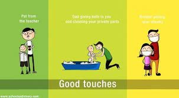
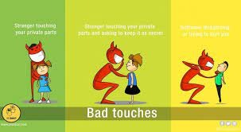
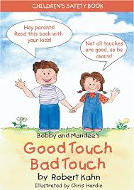

Good touch and bad touch are important concepts that help individuals understand appropriate and inappropriate physical contact. It is crucial to educate children and raise awareness about these topics to ensure their safety and well-being.
Today we can discuss all good touch bad touch, safe touch unsafe touch, actually this topic comes under the ‘Child Abuse‘ category since it needs some broader explanation we created a separate article.
Good Touch: Good touch refers to physical contact that is safe, comforting, and respectful. Examples of good touch include a warm hug from a loved one, a handshake, or a pat on the back as a sign of encouragement or support. Good touch is consensual and does not cause discomfort, pain, or harm. In the simplest words, good touch is when an individual is comfortable. And feels protected. Teach your child about gestures full of warmth like a gentle hug, a pat on the back, a kiss on the forehead, or a handshake, etc. He/she can consider all these as a good as long as it does not feel uncomfortable or forceful. Similarly, bad touch is right the opposite.
Bad Touch: Bad touch refers to physical contact that is inappropriate, uncomfortable, and violates personal boundaries. Examples of bad touch include unwanted touching of private body parts, forced kisses, groping, or any other form of non-consensual contact that causes distress or harm. Bad touch is unacceptable, and it is important to report it to a trusted adult or authority figure.
It is crucial to teach children about good touch and bad touch, empowering them to recognize and speak up if they experience any form of inappropriate contact. By fostering open communication and providing a safe environment, we can protect children and ensure their physical and emotional well-being. A bad touch is the one that causes discomfort or uneasiness. So even if a simple caress, hug, cheek pulling, or pat is not likeable for the child, it can still be considered a bad touch. The repercussions of an undesirable touch can be sinister for a child. So make sure you elaborate on this one in more detail. And help the child to understand the difference between the two clearly. The best way to create an understanding of this touch is to tell the child about the body parts that are considered ‘private’. A simple explanation of these areas can help children understand how their body is completely theirs. And no one must touch the private areas, as this would mean a risk to their safety.
Good touch refers to physical contact that is appropriate, consensual, and makes individuals feel comfortable and safe. It can include gestures such as gentle hugs, handshakes, pats on the back, or holding hands between consenting individuals. Good touch is typically associated with positive emotions a… Differentiating between good touch and bad touch is crucial, especially when it comes to teaching children and young adults about personal boundaries and consent. Educating individuals about these concepts helps empower them to recognize and respond appropriately to uncomfortable or harmful situations.
It is imperative to create opportunities to talk to the children and discuss what a good touch is and what is not. Even though you may think that your child is too young to understand the difference between the good and bad touch and other such topics, but they are not, you can talk about these subjects with ease, so that they learn about them from an early age without getting scared. This blog will help you educate your children about the difference between good and bad touch.
Tell your kids about various kinds of touches. For example, good touch feels caring, like a pat on the head, back, or a bear hug. In comparison, a bad touch can hurt your body or feelings, such as pinching, hitting, or touching any private area. Let children know that it’s ok to say no if you don’t like any touch, even from a friend or a family member.
Being expressive regarding sexual matters is crucial, and though these topics might be sensitive to discuss, you are where your child gets their signs from. Explain them in an engaging way with examples of incidents that happened before.
Empower them to voice up and say NO. Inculcate in them the right to be the boss of their own body. They have the choice to deny a handshake, a hug, or any physical touch if they don’t like it. Also, tell them not to allow anybody to click their pictures without permission.
Parents sometimes use nicknames for sexual terms, which is inappropriate. Employing the appropriate terms for the body parts, such as the vagina, penis, and so on, makes these parts feel important. The right words will also be helpful for your child to express themselves accurately concerning their body.
Your child should not feel guilty if they refuse affection from anyone for any reason. Educate your daughter that her feelings and decisions are paramount when it comes to her own physical space. This will help her to trust her emotions with clarity.
"If you teach children the proper names and tell them these are the doctor words for these parts, it will strengthen their ability to communicate about these topics," Dickson says. "In turn, it will create more openness and less"You don't want to do anything that may make them feel embarrassed about asking questions. If you're uncomfortable talking about body parts, they will have discomfort as well." Parents may avoid the topic because they think that their children are too young and the subject might be scary. But there are ways to bring it up in normal conversation. Maybe it's at bath time, on the way to a doctor check up or before swim lessons.
According to a leading media house, a child can be sensitized to this knowledge when he/she is 2 to 3 years old. At this age, kids start socializing outside their homes. Because they enter the preschools. And are exposed to many outsiders on a daily basis.
Kids speak to their parents confidently only when they feel a strong bonding within the family. As parents, we must ensure that our kids are heard each and every time when they come up to us. In fact, establishing family rules like having dinner together, etc. can help children to open up about their issues easily.
Comments